Bioggio · Ticino
Auto, moto, supercar e vetture d'epoca. In Svizzera e in Europa, con il carrello chiuso quando serve. Scrivici su WhatsApp: il preventivo arriva in pochi minuti.
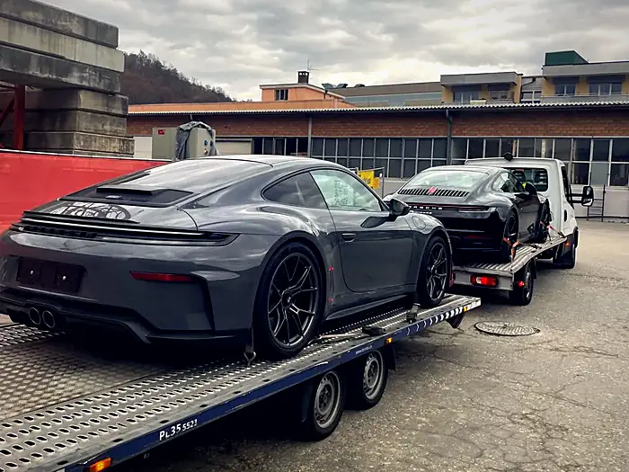
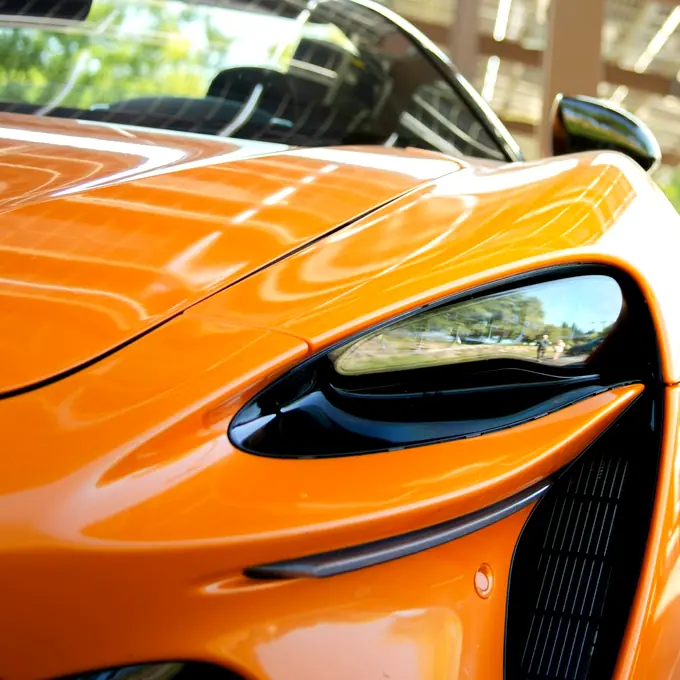
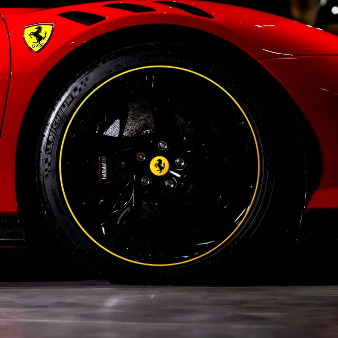
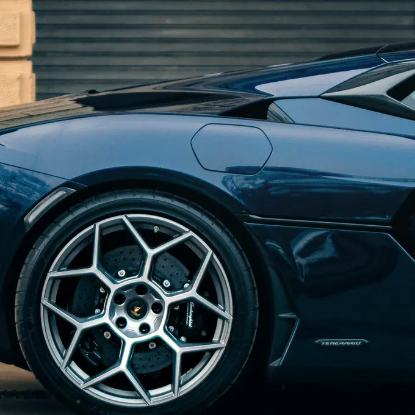
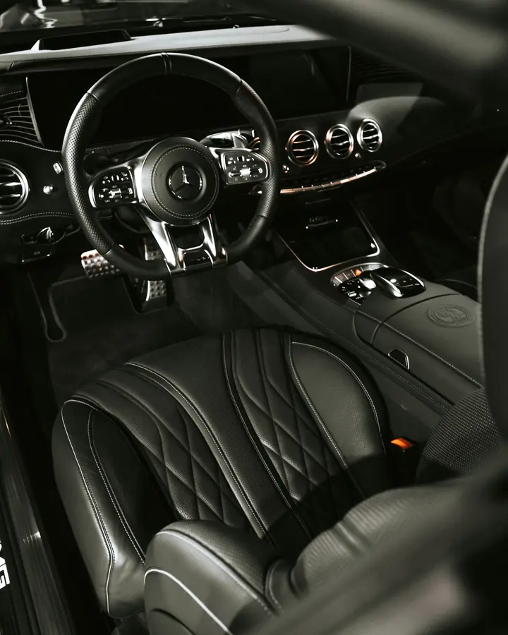
Cosa facciamo
Auto e moto, in Svizzera e in Europa. Chi ti risponde su WhatsApp è la stessa persona che guida il mezzo e che te lo consegna: nessun intermediario in mezzo.
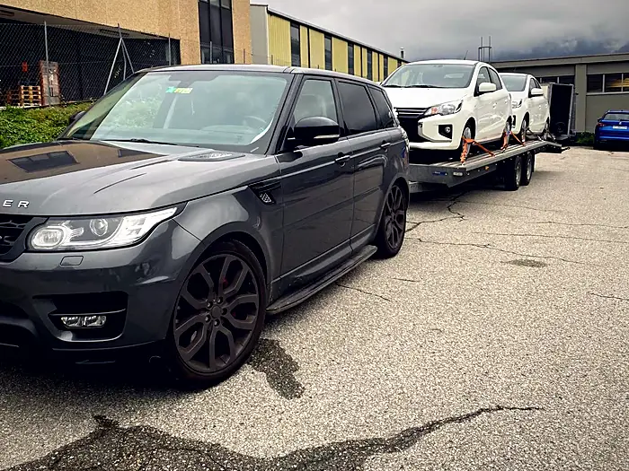
Dalla city car alla supercar. Ritiro all'indirizzo che ci dai, consegna a destinazione.
Scopri →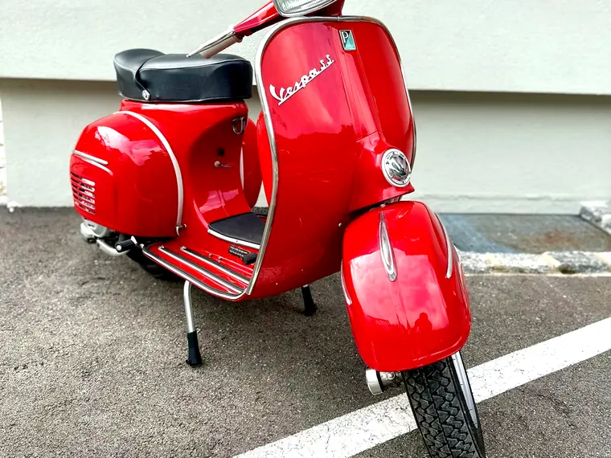
Furgone attrezzato con ferma-moto e cinghie: sportive, custom, enduro, scooter e moto d'epoca viaggiano dritte e al chiuso.
Scopri →
Per auto d'epoca, vetture compatte e moto: viaggiano coperte, al riparo da pioggia, sale e sguardi.
Scopri →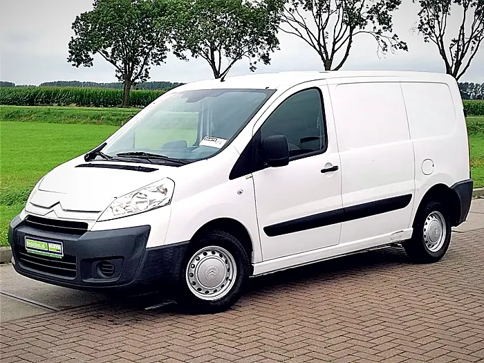
Citroën Jumpy a CHF 80 al giorno, Fiat Ducato a 120. Ritiro e riconsegna a Bioggio.
Scopri →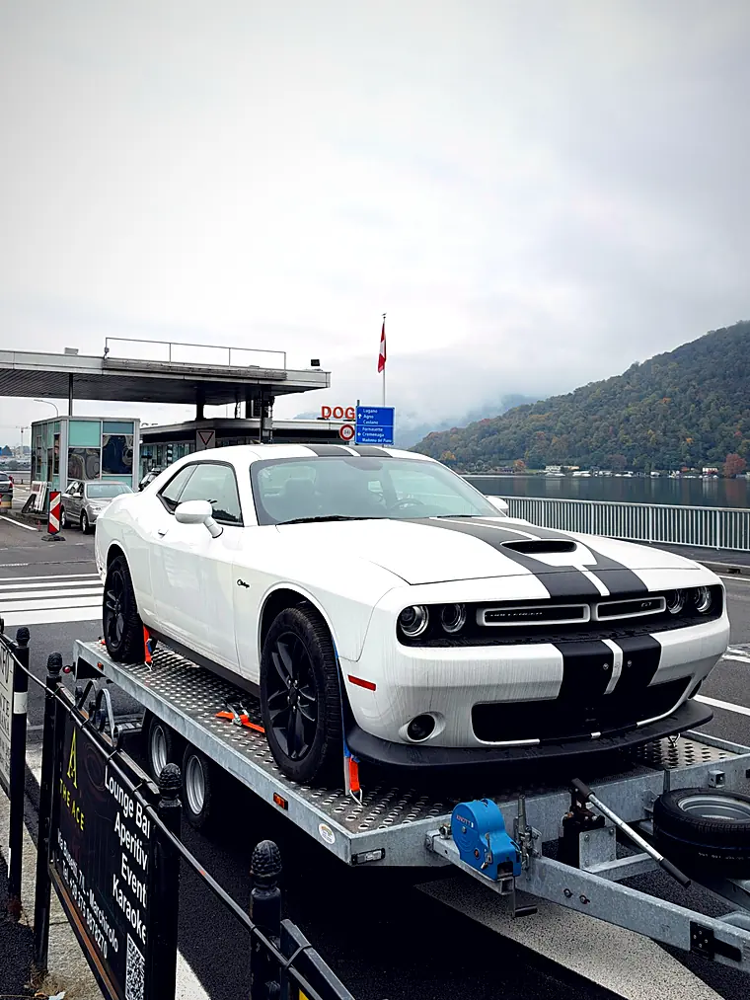
Comprata all'estero o rientri con la tua? Sdoganamento, tributi e targhe li sbrighiamo noi, in entrambi i sensi.
Scopri →In panne, incidentata o che non parte: la carichiamo lo stesso. Su appuntamento.
Scopri →Il pezzo forte
Debon Roadster C900. Dentro non entrano pioggia, sale, sassi e sguardi. L'ingresso della rampa misura 177 cm e tra i passaruota ce ne sono 191: ci stanno le vetture d'epoca, le piccole e le moto.
Verifica in due secondi
Scrivi marca e modello. Confrontiamo la larghezza con i 177 cm dell'ingresso rampa e ti diciamo subito come viaggia, senza che tu debba chiedere a nessuno.
Le moto ci stanno sempre, qualunque sia la cilindrata: questo controllo serve solo per le auto. Misure di carrozzeria da scheda tecnica, specchietti esclusi. Allestimenti e cerchi possono cambiare qualche millimetro: la verifica finale la facciamo noi prima di confermare il preventivo.
Il mondo che trasportiamo
Youngtimer, americane, giapponesi, utilitarie. Cambia l'auto, non il modo di trattarla.
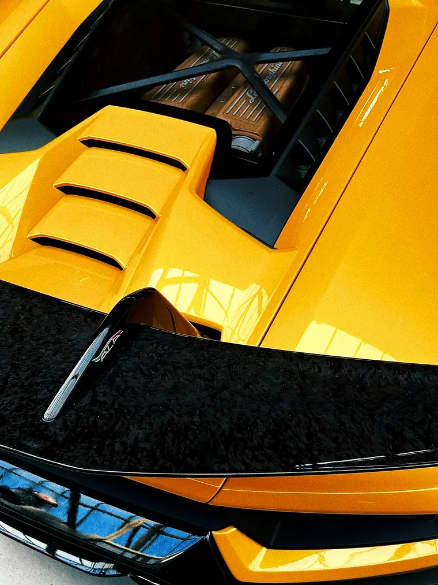
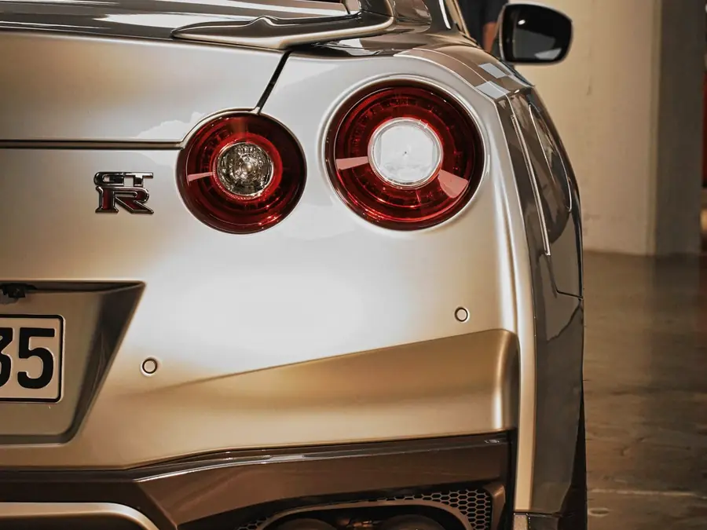
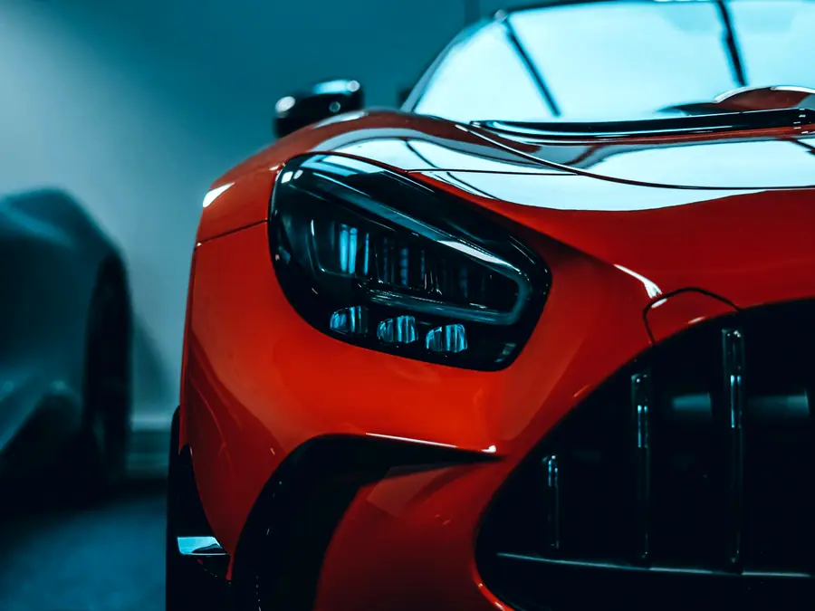
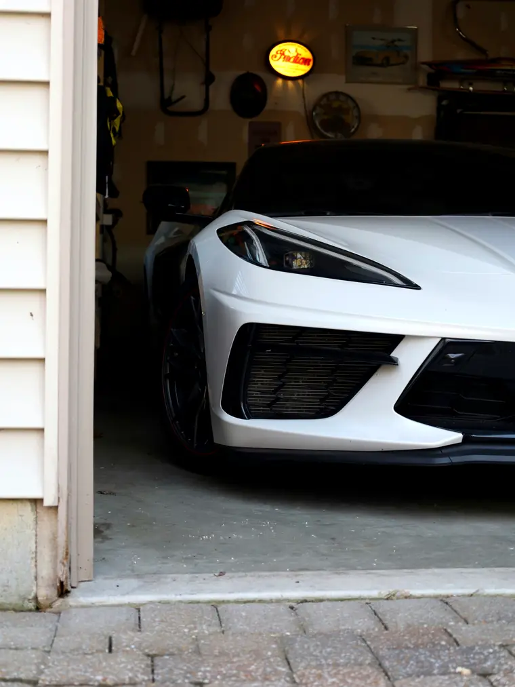

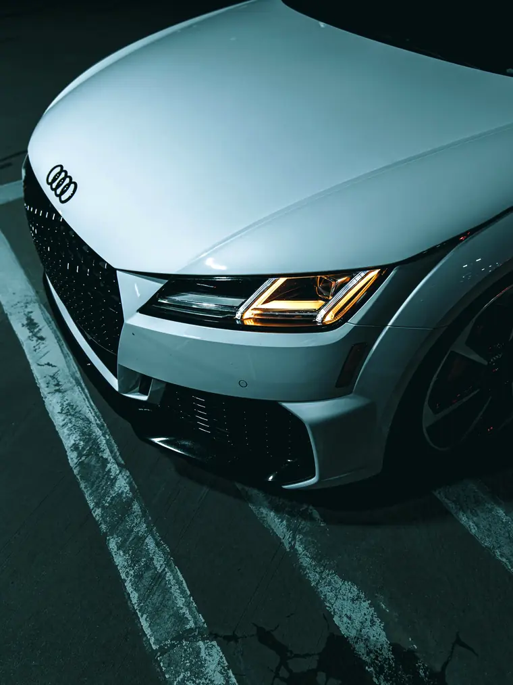
Come le trattiamo
Il valore delle auto cambia.
Il modo di trasportarla in sicurezza no.
I nostri trasporti
Ogni foto è un trasporto fatto davvero, non un'immagine d'archivio.
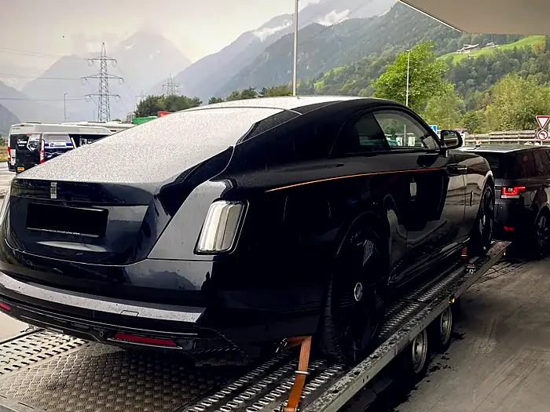
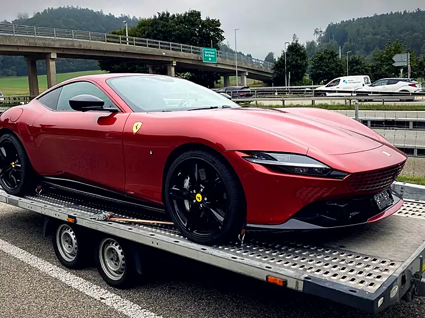
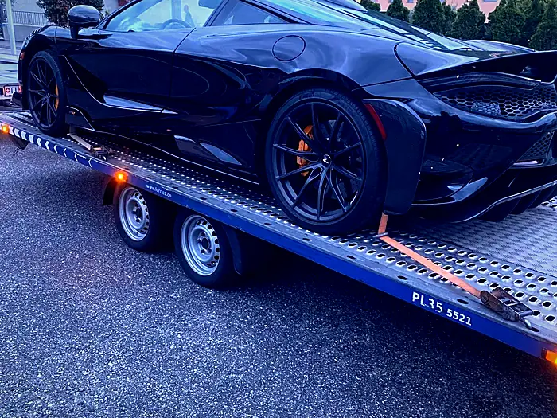

← Trascina per vedere gli altri
Come funziona
Dicci che auto è, dov'è adesso e dove deve arrivare. Ti rispondiamo con un prezzo.
Guardiamo insieme la carrozzeria, facciamo le foto e carichiamo.
Viaggia assicurata. All'arrivo si ricontrolla insieme a chi la riceve, e hai finito.
Nel dettaglio
Apri solo quello che ti interessa. Se preferisci chiedere a voce, il numero è sempre lo stesso.
Ritiriamo il veicolo all'indirizzo che ci dai e lo consegniamo a destinazione. Carichiamo utilitarie, moto e scooter, supercar, vetture d'epoca e veicoli commerciali, anche se non marcianti o incidentati.
Tutto il territorio svizzero, con base in Ticino. All'estero le tratte più richieste sono Italia (Milano, Torino, Roma), Germania (Monaco, Stoccarda, Francoforte), Francia e Austria. Per i trasporti internazionali possiamo gestire anche le pratiche doganali.
Quando non si può aspettare, ritiriamo e consegniamo entro il giorno successivo in tutta la Svizzera. È il servizio che usano concessionari con scadenze strette e officine che aspettano un veicolo per iniziare una lavorazione.
Chiedi il preventivo →Una moto non si carica come un'auto. Va messa dritta, bloccata davanti e tenuta ferma su tutti e quattro i lati, altrimenti in frenata si muove e si rovina da sola. Per questo abbiamo un furgone attrezzato apposta: ferma-moto a pavimento, punti di ancoraggio e cinghie a cricchetto. Dentro la moto sta dritta da sola, al chiuso, e non la vede nessuno.
La moto sale sul ferma-moto e resta dritta da sola. Poi vanno le cinghie, e lì conta dove le attacchi: se le metti nel punto sbagliato, in frenata la moto non si muove ma si rovina lo stesso.
Sono le parti che reggono la trazione delle cinghie senza deformarsi.
La cinghia va tenuta il più vicino possibile agli steli: più si allontana, più il manubrio fa leva e rischia di piegarsi. Un manubrio da 22 mm è più delicato di un conico da 28.
Si piegano, si crepano o si fondono. Una cinghia su una freccia costa più del trasporto.
Sotto ogni cinghia mettiamo una protezione, perché gli spigoli della moto tagliano il nastro e il nastro segna la vernice. E alle soste ricontrolliamo sempre: su un viaggio lungo le cinghie si allentano, è normale, basta ritenderle.
È il motivo per cui ci chiamano più spesso. Ritiriamo la moto dal venditore in Italia, Germania, Francia o Austria e te la portiamo a casa. Se serve ci occupiamo anche dello sdoganamento e dell'immatricolazione svizzera, così tu non devi muoverti: compri, e la moto arriva targata.
Su un carrello aperto o su una bisarca l'auto prende pioggia, sale, polvere e sassi per centinaia di chilometri, e resta in vista per tutto il viaggio. Nel carrello chiuso viaggia in un vano dedicato solo a lei e arriva pulita, nelle stesse condizioni in cui l'abbiamo caricata.
Tradotto: il carrello chiuso è il servizio giusto per le vetture d'epoca, per le auto piccole e per le moto. Le supercar moderne sono quasi tutte oltre i 190 cm di carrozzeria e dalla rampa non passano. Stiamo per prendere un carrello più grande proprio per loro; nel frattempo le trasportiamo sul carrello aperto, fissate alle ruote e assicurate.
Non sei sicuro che la tua ci stia? Mandaci marca, modello e anno: le misure le verifichiamo noi prima di darti il preventivo. È una verifica di due minuti che evita un viaggio a vuoto.
Il carrello chiuso non si noleggia: ogni trasporto è eseguito dal nostro personale, che conosce l'attrezzatura e sa come fissare una vettura di valore.
Chiedi se la tua ci sta →Hai comprato un'auto all'estero o stai rientrando con la tua? Ce ne occupiamo noi dall'inizio alla fine: il veicolo torna a circolare regolarmente, senza che tu debba mettere piede in un ufficio.
Sulle auto recenti può aggiungersi la sanzione CO₂, che non si paga in dogana ma arriva dopo dall'Ufficio federale dell'energia. Non è dovuta se la prima immatricolazione all'estero è anteriore di oltre 12 mesi alla dichiarazione doganale, oppure se l'auto ha almeno 6 mesi e più di 5'000 km. È la voce che fa la differenza tra un affare e una sorpresa: te la calcoliamo prima.
Chi sposta il domicilio può importare l'auto come masserizia di trasloco, senza dazio e senza IVA, a tre condizioni: averla usata personalmente all'estero per almeno sei mesi prima dell'entrata, dichiararla alla dogana al primo passaggio del confine con il modulo 18.44, e continuare a usarla qui. Le targhe svizzere vanno richieste entro un anno dal trasferimento, e per dodici mesi l'auto non si può rivendere.
Nell'altro senso i conti cambiano: la Svizzera è fuori dall'UE, quindi all'ingresso in Italia si paga l'IVA al 22% sul valore del veicolo e, sulle usate senza prova dell'origine preferenziale, anche il dazio. Con la bolletta doganale in mano si passa dall'Agenzia delle Entrate, poi dalla Motorizzazione per l'immatricolazione e infine dal PRA. Anche qui il trasferimento di residenza dà diritto alla franchigia, alle stesse condizioni. Chi vende a un acquirente estero deve invece far radiare il veicolo dalle targhe svizzere: ci occupiamo noi della cancellazione e dei documenti doganali d'uscita.
Per i passaggi tra privati gestiamo la voltura alla Sezione della circolazione, il trasferimento delle targhe e l'aggiornamento della licenza. Nessuna coda, nessun modulo da capire.
Non sei sicuro di avere tutto? Mandaci quello che hai e facciamo una verifica insieme: meglio controllare prima che scoprire un buco a metà strada.
Possiamo ritirare l'auto in Italia, Germania, Francia o Austria, trasportarla, sdoganarla e consegnartela a casa già immatricolata. Un preventivo, una persona di riferimento, tutti i costi detti prima.
Chiedi informazioni →Furgoni per traslochi, consegne, trasporto moto o il ritiro di un acquisto ingombrante. Anche per un solo giorno o per un weekend, senza contratti lunghi.
Ritiro e riconsegna alla nostra sede di Bioggio, comoda da Lugano, Agno, Manno, Lamone e dal Malcantone. Prezzi chiari, senza costi nascosti, e nessuna formalità complicata: scegli il mezzo e le date, confermiamo subito.
Se preferisci trainare da solo, noleggiamo anche il carrello aperto per auto e moto: va bene con qualsiasi veicolo con gancio di traino di portata adeguata e ti spieghiamo noi carico, fissaggio e guida con il rimorchio.
Prenota un furgone →Se il veicolo non si muove più, lo carichiamo e lo portiamo dove serve: la tua officina, il concessionario, casa tua. Copriamo il Canton Ticino da Chiasso ad Airolo e da Locarno a Lugano, valli comprese, con base a Bioggio. Il servizio è su appuntamento.
Il carrello ha rampe a bassa pendenza, cinghie certificate e protezioni per le ruote: si carica in sicurezza anche un'auto ribassata o danneggiata sotto. Lavoriamo con officine e carrozzerie in tutto il Ticino e possiamo consigliarti il posto giusto per il tipo di danno; in caso di sinistro ci coordiniamo con la tua assicurazione.
Scrivici →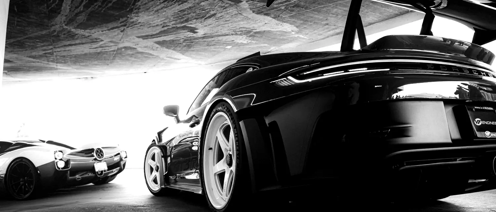
Le auto degli altri,
trattate come le nostre.
Preventivo gratuito
Dicci che auto è, dove si trova e dove deve arrivare. Il preventivo è gratis e il prezzo che ti diamo è quello che paghi.